Pour l'opérateur au poste de travail : créer un lot en quatre touches, le peser, le ranger, imprimer son étiquette, le retrouver en scannant son QR code, et charger un enlèvement le jour où le camion vient. Même sans réseau.
⏱ 10 minutes📱 Exemple : Youssef, Usine de Nabeul📶 Marche hors ligne
Avant de commencer, ayez sous la main
Un téléphone ou une tablette avec un navigateur (Chrome, Safari)
Votre compte (invitation reçue par email, Guide 7)
Une balance à côté du poste
Une imprimante d'étiquettes si vous en avez une (facultatif)
Le chemin en un coup d'œil
AOuvrir l'applicationLa même adresse que DivaWaste ; l'opérateur y arrive tout seul.
BCréer un lotZone, OF, type de déchet, poids : quatre écrans, de grosses touches.
CRetrouver un lotScanner son étiquette, puis le ranger, le repeser, le déplacer.
DCharger un enlèvementScanner chaque lot qui monte dans le camion.
ESans réseauTout continue ; l'envoi se fait au retour du réseau.
FL'assistant« Pèse le lot … à 44 kg » : il prépare, vous confirmez.
✓Fiche de testCochez ce qui marche, notez ce qui gêne.
Qui l'utilise ? L'Opérateur atelier n'a que cette application. Les autres rôles l'ouvrent par le menu Application atelier (en bas à gauche du bureau), par exemple sur la tablette de l'atelier ; ils reviennent au bureau par Version bureau.
L'installer comme une application. Sur le téléphone, ouvrez DivaWaste dans le navigateur, puis menu ⋮ › Ajouter à l'écran d'accueil (Android) ou Partager › Sur l'écran d'accueil (iPhone). L'icône DivaWaste s'ouvre alors en plein écran.
Comment lire ce guide. La touche à toucher est entourée en rouge ; l'encadré vert dit ce que vous devez voir.
DivaWaste · Guide 8 — Application atelier
A. Ouvrir l'application
Connectez-vous avec votre email et votre mot de passe : un opérateur arrive directement sur l'accueil de l'atelier.
En haut : l'état du réseau (En ligne · Tout est synchronisé), le bouton de l'assistant (le robot) et Mon compte.
Quatre grosses touches : Nouveau lot, Scanner, Charger un enlèvement, et votre nom (compte et déconnexion).
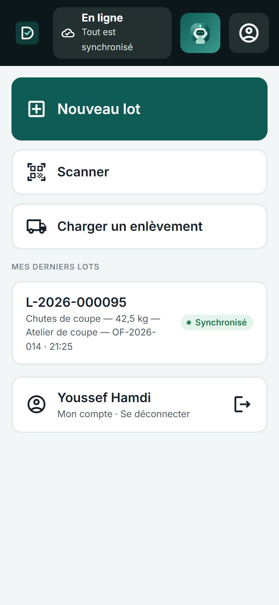
L'accueil de l'atelier.
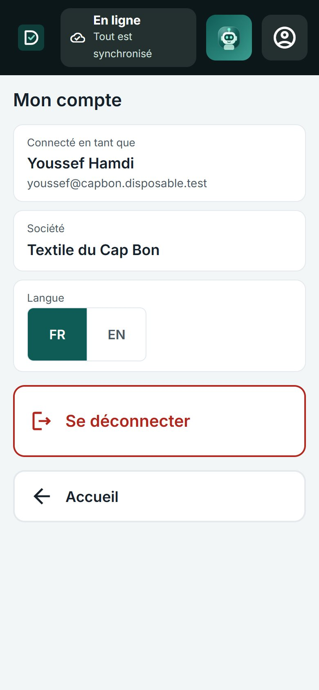
Mon compte : qui est connecté, la société, la langue, Se déconnecter.
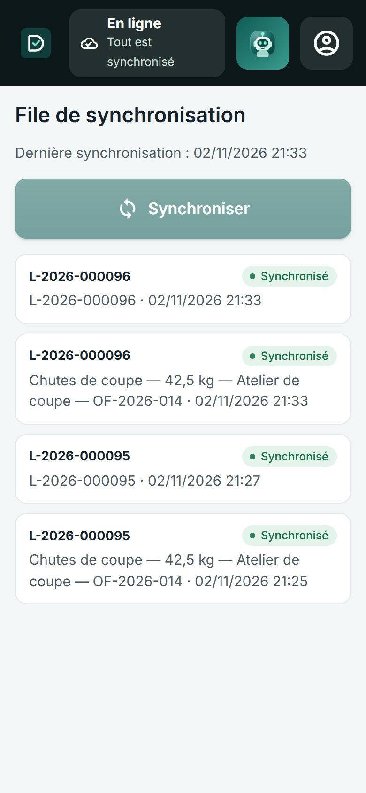
La file de synchronisation : ce qui est parti, ce qui attend.
Vous ne voyez que vos sites. Youssef est Opérateur atelier à Usine de Nabeul : les zones proposées sont celles de Nabeul, et seuls les enlèvements de Nabeul se chargent ici.
DivaWaste · Guide 8 — Application atelier
B. Créer un lot Quatre écrans, une touche chacun
Nouveau lot, puis la zone où se trouve le déchet (Atelier de coupe, Confection…). Les pastilles en haut rappellent ce qui est déjà choisi : touchez-en une pour revenir.
L'OF d'où vient le déchet : touchez-le, ou Scanner la fiche de l'OF, ou Sans OF. (Cet écran n'existe que si la production est suivie.)
Le type de déchet. Un déchet dangereux porte l'étiquette Dangereux.
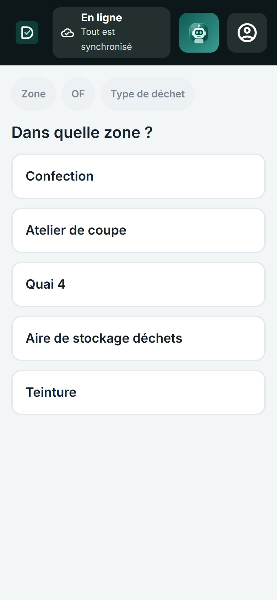
1. La zone.
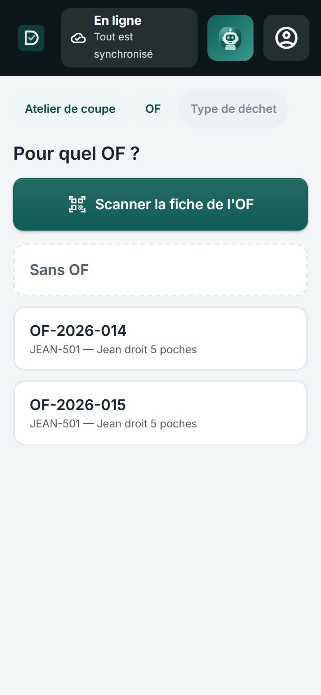
2. L'OF (ou Sans OF).
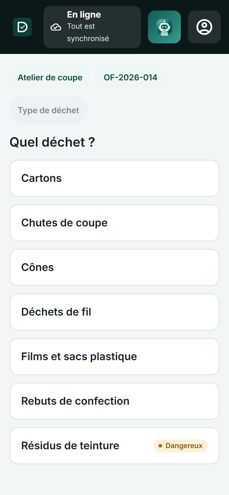
3. Le type de déchet.
Les derniers lots créés sur l'appareil restent listés sur l'accueil de l'atelier, avec leur état d'envoi : pratique pour vérifier d'un coup d'œil ce qui vient d'être fait.
DivaWaste · Guide 8 — Application atelier
Le poids net sur le clavier (la virgule pour les décimales : 42,5), puis Créer le lot. Pas de balance sous la main ? Peser plus tard : le lot est créé « à peser » ; la liste des lots le montre, et l'Accueil du bureau le rappelle s'il reste sans poids.
Le lot est créé avec son numéro : Imprimer l'étiquette (QR code, numéro, déchet, poids, zone), Créer un autre lot ou revenir à l'Accueil.
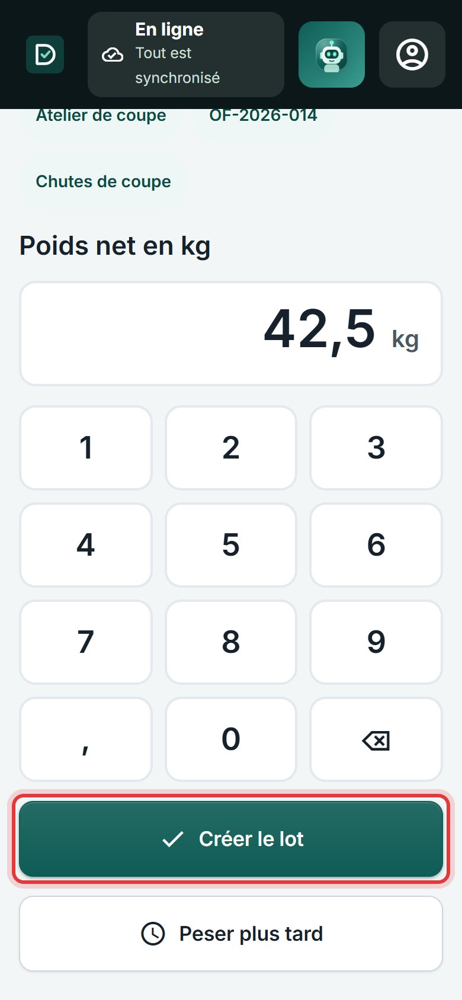
4. Le poids, au clavier.
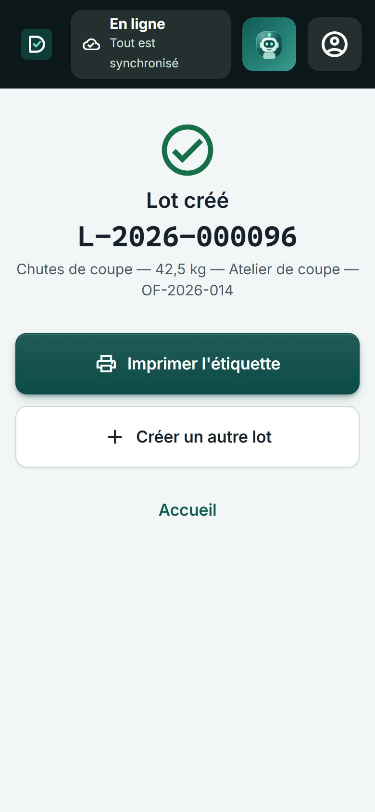
Le lot L-2026-000096 est créé.
Vous devez voir « Lot créé », son numéro, et la ligne « Chutes de coupe — 42,5 kg — Atelier de coupe — OF-2026-014 ». Le lot apparaît aussitôt dans Déchets › Lots du bureau, statut Créé.
L'étiquette se colle sur le sac ou la balle. Tout ce qui suit (ranger, peser, charger) commence en scannant ce QR code.
Une erreur de poids ? Pas de panique : Repeser (C) corrige, et l'ancien poids reste dans l'historique du lot.
DivaWaste · Guide 8 — Application atelier
C. Retrouver un lot et agir dessus
Scanner : placez le QR code de l'étiquette dans le cadre. La première fois, le navigateur demande l'accès à la caméra : Autoriser.
Étiquette abîmée, ou caméra refusée ? Saisir le code à la main : tapez le numéro du lot, puis Confirmer.
La fiche du lot s'ouvre : numéro, statut, déchet, poids, site et zone, et les actions possibles.
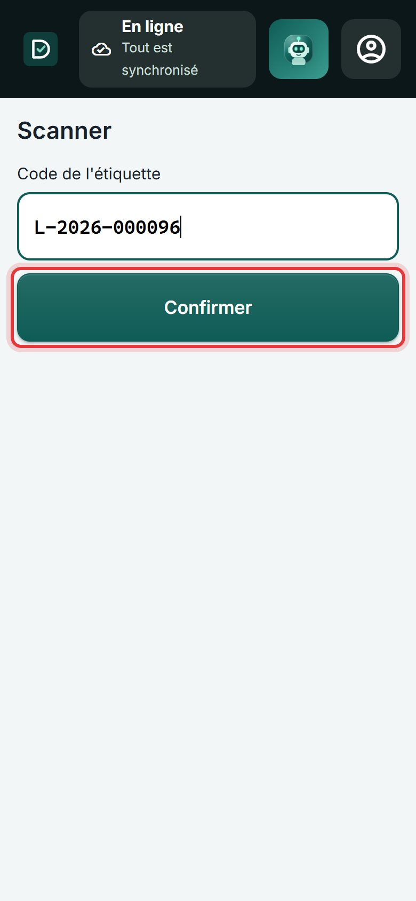
Le code tapé à la main.
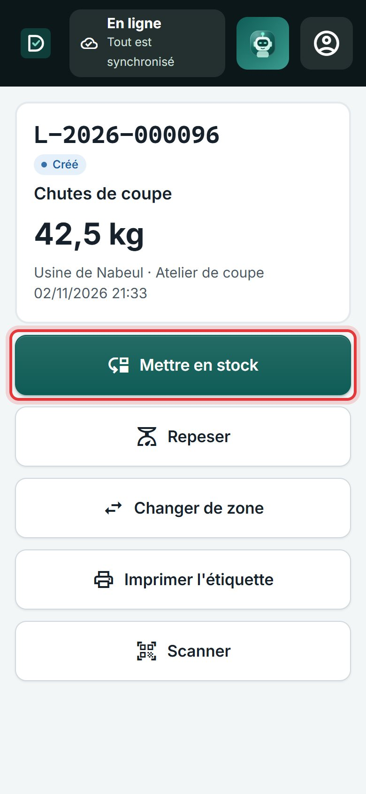
La fiche du lot, statut Créé.
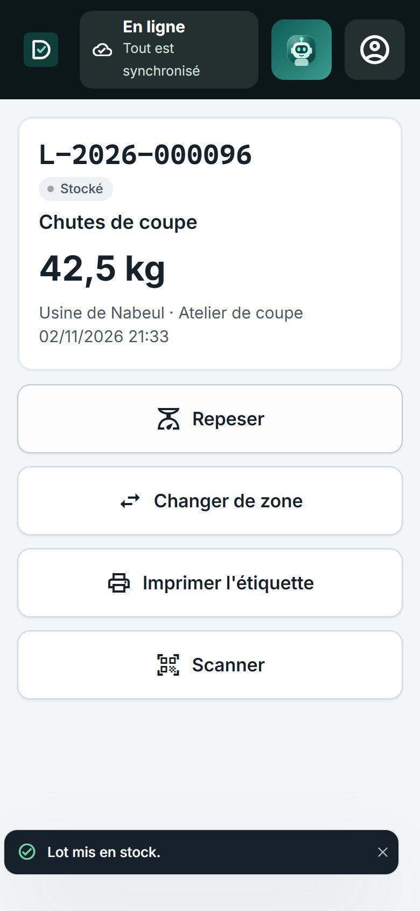
Mettre en stock : statut Stocké.
Créé ou Stocké ?Créé : le lot vient d'être fait au poste. Stocké : il est rangé et compte dans le stock du site, prêt à partir. « Mettre en stock » le range dans sa zone actuelle ; pour l'emmener ailleurs, Changer de zone.
DivaWaste · Guide 8 — Application atelier
Action
Ce qu'elle fait
Mettre en stock
Le lot passe de Créé à Stocké, dans sa zone.
Repeser
Un nouveau poids net (kg), puis Enregistrer. L'écart avec l'ancien poids est gardé dans l'historique.
Changer de zone
Touchez la nouvelle zone (aire de stockage, quai…). La zone actuelle est grisée.
Imprimer l'étiquette
Une nouvelle étiquette, si l'ancienne est abîmée ou perdue.
Scanner
Passer au lot suivant sans revenir à l'accueil.
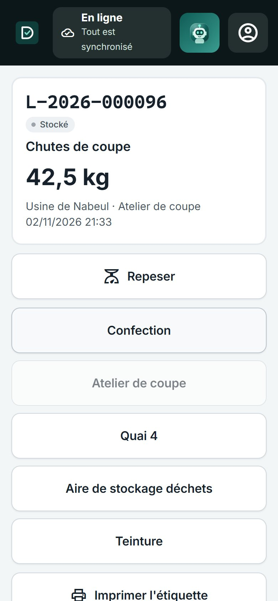
Changer de zone.
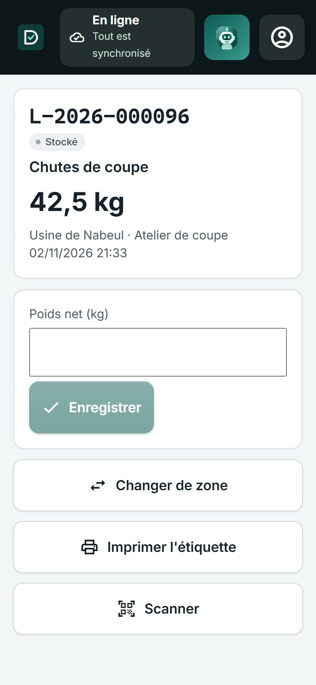
Repeser.
Diviser un lot (une balle en deux) se fait sur le bureau, dans la fiche du lot : Plus d'actions.
DivaWaste · Guide 8 — Application atelier
D. Charger un enlèvement Le jour où le camion vient
Charger un enlèvement : la liste des enlèvements confirmés de vos sites, avec le prestataire, la date et le nombre de lots.
Touchez le bon (ici ENL-2026-0006, Recyclage du Sahel). L'écran montre la caméra et la liste des lots prévus.
Scannez chaque lot au moment où il monte dans le camion : il se coche, et le compteur avance (« 1 / 3 lots scannés »). Un lot d'un autre enlèvement est refusé : « Ce lot ne fait pas partie de cet enlèvement ».
Valider le chargement. S'il manque des lots, l'application le dit : « 1 lot(s) non scanné(s) resteront en stock » ; confirmez seulement s'ils restent vraiment.
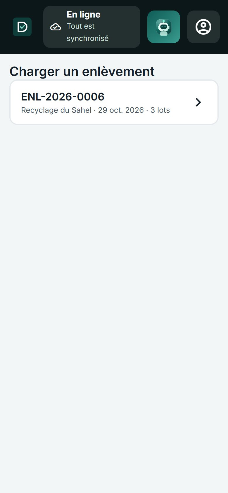
Les enlèvements à charger.
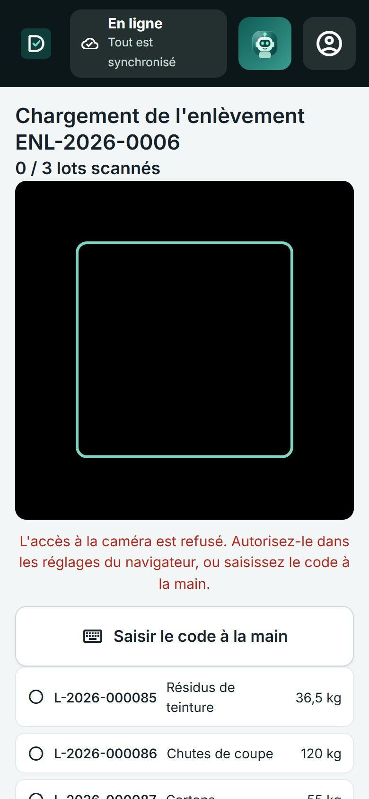
Chaque lot scanné se coche.
Vous devez voir « Chargement enregistré. » ; sur le bureau, l'enlèvement passe à Enlevé, ses lots partent du stock, et les bordereaux sont prêts à signer (Guide 4, R3).
Le chargement a besoin du réseau. Les lots, eux, se créent et se pèsent sans réseau (E) ; la validation du chargement, non : faites-la au retour du réseau, la liste des lots scannés reste à l'écran.
DivaWaste · Guide 8 — Application atelier
E. Sans réseau L'atelier ne s'arrête pas
Le réseau tombe : la pastille du haut passe à Hors ligne — « Vous pouvez continuer : les lots seront envoyés au retour du réseau ».
Créez, pesez, rangez comme d'habitude. Chaque opération attend sur l'appareil ; la pastille compte « n à synchroniser ».
Le réseau revient : tout part tout seul, dans l'ordre. Pour forcer : File de synchronisation › Synchroniser.
Dans la file
Ce que ça veut dire
En attente
Pas encore envoyé : il partira au retour du réseau.
Synchronisé
Reçu par DivaWaste : visible sur le bureau.
Conflit
Quelqu'un d'autre a modifié le même lot entre-temps (repesé au bureau, par exemple). Rien n'est écrasé : regardez le lot, puis refaites l'action si elle est toujours juste, ou abandonnez-la.
Échec
Refusé (un lot déjà parti, un droit retiré…) : la raison est écrite sous l'opération.
Ne vous déconnectez pas avec des opérations en attente. L'application prévient : elles restent sur l'appareil, à votre nom, et partiront au retour du réseau ; mais un autre opérateur sur le même appareil ne pourra pas les envoyer à votre place.
Étiquette d'un lot créé hors ligne : elle s'imprime au retour du réseau, quand le lot a son numéro définitif.
DivaWaste · Guide 8 — Application atelier
F. L'assistant, au poste Dites ce que vous voulez faire
Touchez le robot en haut de l'écran : l'assistant s'ouvre. Il sait quel lot est affiché.
Écrivez ou dictez (le micro du clavier) : « pèse le lot L-2026-000095 à 44 kg ».
Il prépare l'action et l'affiche À CONFIRMER : quel lot, quel poids, le poids actuel. Touchez Confirmer (ou Modifier, Annuler).
« C'est fait » : le lot pèse maintenant 44 kg ; Ouvrir L-2026-000095 pour le voir.
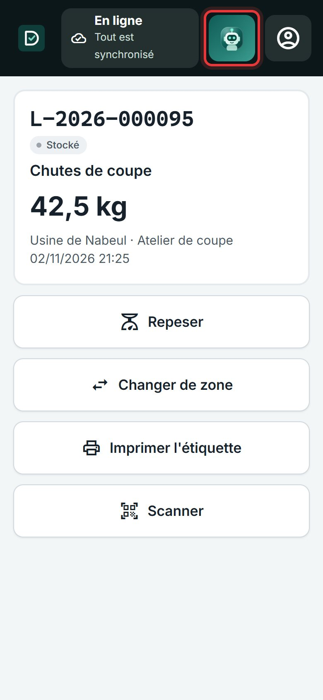
Le robot, en haut.
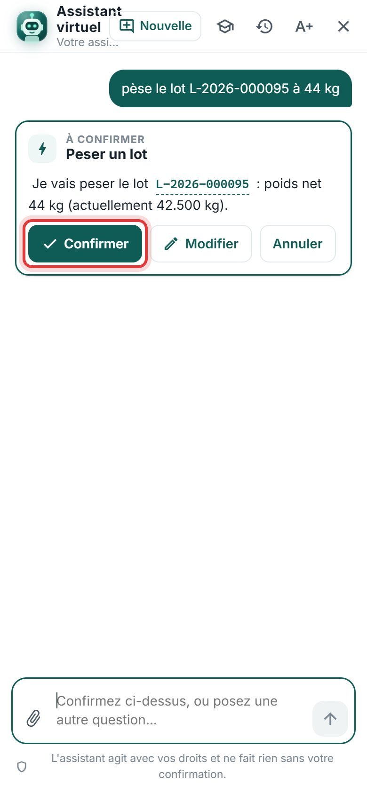
L'action, à confirmer.
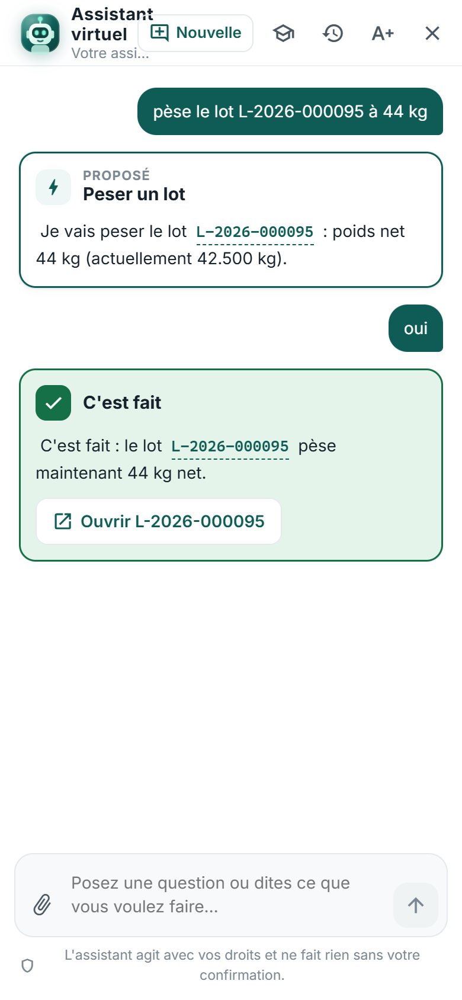
C'est fait.
Ce qu'il fait au poste : peser un lot, compter ses colis, le ranger dans une zone, dire où en est un lot ou un enlèvement, expliquer une règle. Il agit avec vos droits et rien sans votre « Confirmer ». Il a besoin du réseau : hors ligne, son bouton disparaît (Guide 6).
DivaWaste · Guide 8 — Application atelier
Fiche de test
☐
L'opérateur se connecte sur le téléphone et arrive sur l'accueil de l'atelier.
☐
Je crée un lot : zone, OF, type, 42,5 au clavier ; il apparaît sur le bureau avec ce poids.
☐
« Peser plus tard » crée un lot « À peser », visible dans la liste des lots du bureau.
☐
L'étiquette s'imprime avec le QR code et le numéro du lot.
☐
Le scan de l'étiquette (ou le code tapé) ouvre la fiche du lot.
☐
Mettre en stock, Repeser, Changer de zone : chaque action se voit sur le bureau.
☐
Je charge un enlèvement en scannant ses lots ; un lot d'un autre enlèvement est refusé.
☐
Valider avec un lot non scanné : l'application prévient, et ce lot reste en stock.
☐
Mode avion : je crée un lot ; « 1 à synchroniser » ; il part au retour du réseau.
☐
Un repesage au bureau pendant que je suis hors ligne donne un « Conflit », sans rien écraser.
☐
« Pèse le lot … à 44 kg » à l'assistant : je confirme, le poids change.
☐
L'application est installée sur l'écran d'accueil et s'ouvre en plein écran.